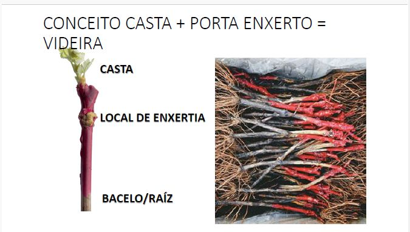

Capítulo 01
Castas Autóctones de Portugal
Portugal é um dos países com maior diversidade ampelográfica do mundo. Apesar da sua reduzida área geográfica, alberga centenas de castas autóctones — muitas delas exclusivas — que constituem a identidade singular do vinho português.
As castas autóctones são aquelas que evoluíram naturalmente numa determinada região ao longo de séculos, adaptando-se às condições específicas de solo e clima. Esta adaptação traduz-se em características organolépticas únicas que não é possível replicar noutro contexto.

Leitura das Fichas
Cada ficha de casta apresenta dados agronómicos e enológicos essenciais para compreender o comportamento da variedade na vinha e o seu potencial no vinho:
Capítulo 02 · Tinta
Touriga Nacional
Considerada a grande casta tinta portuguesa, a Touriga Nacional é o estandarte da viticultura nacional. Apesar da sua fertilidade muito baixa — que limitou durante décadas a sua expansão — a qualidade excepcional dos seus vinhos tornou-a a variedade mais prestigiada do país.

- Utilização nacional6.700 ha (10,35%) — Douro e Alentejo com 6.000 ha
- TendênciaCrescente
- VigorElevado
- Porte (tropia)Deitado, retombante
- Índice de fertilidadeMuito baixa
- Índice de Winkler1.610 h acima de 10 °C com 11 t/ha de produção
- Tamanho do cachoPequeno (95–250 g)
- BagoLigeiramente achatado, médio e negro-azul, polpa mole
- PelículaMedianamente espessa
- Sistema de conduçãoQualquer; difícil de conduzir pelo porte retombante
- Solo favorávelTodos os tipos de solo, mesmo os pesados e férteis
- Clima favorávelExige elevada insolação e calor
- Conservação pós-maturaçãoCasta vindimada tarde; resistência às chuvas de Outono
- Acidez naturalMédia-alta, 4,5–6,0 g/l total
- Intensidade da corBoa
- Envelhecimento do vinhoMuito elevado; particular aptidão para madeira
- Qualidade do vinhoMuito elevada
Capítulo 03 · Tinta
Touriga Franca
A casta com maior área plantada no Douro, a Touriga Franca combina produtividade razoável com qualidade considerável. É o complemento indispensável da Touriga Nacional nos lotes do Douro e do Vinho do Porto, contribuindo com estrutura e aromas florais intensos.

- Utilização nacional13.200 ha (5,8%) — maior expressão no Douro
- TendênciaCrescente, com migração para sul
- VigorMédio/elevado
- Porte (tropia)Semi-erecto
- Índice de fertilidadeBaixo-médio, 1,5–1,7 inflorescências/gomo abrolhado
- Índice de Winkler1.500 h acima de 10 °C com 11 t/ha de produção
- Tamanho do cachoMédio/grande (200–300 g)
- BagoMédio (1,50–2,50 g), polpa de consistência firme
- PelículaMedianamente espessa, por vezes grossa
- Sistema de conduçãoAdapta-se a diversas formas
- Solo favorávelEvitar solos muito férteis, profundos e húmidos (comprometem grau alcoólico e rachamento da película)
- Clima favorávelCotas de baixa altitude, boa exposição, seco e quente
- Conservação pós-maturaçãoPerigo de podridões em climas mais húmidos e frescos
- Acidez naturalMediana, 3,5–4,5 g/l total
- Intensidade da corVaria com o ano
- Envelhecimento do vinhoGeralmente boa; particular aptidão para madeira
- Qualidade do vinhoAlta, mas com quebra acentuada acima de 10.000 kg/ha ou em condições edafo-climáticas desfavoráveis
Capítulo 04 · Tinta
Aragonês / Tinta Roriz
Conhecida como Tempranillo em Espanha, o Aragonês é a casta tinta mais plantada em Portugal — e uma das mais polémicas. A sua elevada capacidade produtiva pode gerar vinhos de qualidade medíocre; mas com controlo rigoroso do rendimento, produz alguns dos melhores vinhos da Península Ibérica.

- Utilização nacional23.500 ha (24,2%) — Douro e Alentejo com 6.000 ha
- TendênciaDescendente
- VigorMédio elevado
- Porte (tropia)Erecto a semi-erecto
- Índice de fertilidadeMédio (1,75 cachos/lançamento)
- Índice de Winkler1.500 h acima de 10 °C com 11 t/ha de produção
- Tamanho do cachoMédio/grande (200–500 g)
- BagoArredondado, médio e negro-azul, polpa de consistência média
- PelículaMedianamente espessa
- Sistema de conduçãoQualquer; problema de quebra das varas com a empa
- Solo favorávelProfundo, bem drenado; elevado teor de água provoca atrasos no pintor e redução de qualidade
- Clima favorávelSeco e muito quente para obter qualidade
- Conservação pós-maturaçãoMédia-boa
- Acidez naturalBaixa (3–5 g/l total)
- Intensidade da corElevada no mosto; perigo de perda na fermentação
- Envelhecimento do vinhoPotencial elevado; boa aptidão para madeira
- Qualidade do vinhoPolémica — muito variável com o rendimento; com controlo, produz dos melhores vinhos ibéricos
Capítulo 05 · Tinta
Tinta Barroca
Casta essencialmente duriense, a Tinta Barroca é produtiva e de maturação rápida. Valorizada pelo seu vigor e adaptação a vinhas de altitude, adapta-se bem às condições mais frescas do Douro Superior, mas entra facilmente em sobrematuração nas zonas mais quentes.

- Utilização nacional7.000 ha (2,4%) — Douro
- TendênciaFortemente crescente
- VigorElevado
- Porte (tropia)Semi-erecto
- Índice de fertilidadeMédio, 1,6 inflorescências/gomo abrolhado
- Índice de Winkler1.400 h acima de 10 °C com 16 t/ha de produção
- Tamanho do cachoMédio/grande (250–500 g)
- BagoMédio
- PelículaMedianamente espessa
- Sistema de conduçãoAdapta-se a diversas formas
- Solo favorávelProfundo e fértil com alguma humidade; também zonas de elevada altitude
- Clima favorávelFinal de maturação rápido; entra em sobrematuração nas zonas muito quentes e secas
- Conservação pós-maturaçãoPerigo de sobrematuração e de passas
- Acidez naturalMédia, 4–6 g/l total
- Intensidade da corMédia; película muito pigmentada, perde bastante cor com o envelhecimento
- Envelhecimento do vinhoGeralmente boa; particular aptidão para madeira
- Qualidade do vinhoVaria com o solo; quebra acentuada com produções elevadas
Capítulo 06 · Tinta
Trincadeira / Tinta Amarela
Dispersa por todo o país, a Trincadeira é uma casta de dupla face: em condições ideais de solo seco e calor suficiente, produz vinhos notáveis com cor granada intensa e grande potencial de guarda. Em condições desfavoráveis, o excesso de produção e a sensibilidade à podridão comprometem irremediavelmente a qualidade.

- Utilização nacional16.200 ha (10,5%) — dispersa por todas as zonas
- TendênciaDecrescente
- VigorElevado
- Porte (tropia)Semi-erecto
- Índice de fertilidade1,2 cachos/gomo
- Índice de Winkler1.557 h acima de 10 °C com 11 t/ha de produção
- Tamanho do cachoMédio/grande (210–300 g)
- BagoMédio, ligeiramente achatado, negro-azul, polpa mole e suculenta
- PelículaPouco espessa, frágil e facilmente atacada por podridão
- Sistema de conduçãoSebe difícil; exige equilíbrio entre área foliar e produção; vara longa — risco de excesso de produção
- Solo favorávelBaixa fertilidade, textura fraca/arenosa, seco ou bem drenado
- Clima favorávelQuente, com suficientes horas de insolação; excesso de calor provoca secagem dos bagos
- Conservação pós-maturaçãoPouca; fraca resistência às chuvas de Outono
- Acidez naturalMédia, 4,5–5,5 g/l total
- Intensidade da corGranada intenso
- Envelhecimento do vinhoMuito boa em vinhos de elevada qualidade; aptidão para madeira
- Qualidade do vinhoMuito dependente do ambiente; excelente no óptimo, sem interesse em condições desfavoráveis
Capítulo 07 · Tinta
Alfrocheiro
Casta de vocação bairradina e duriense, o Alfrocheiro destaca-se pela fertilidade dos gomos basais — o que permite poda curta sem perda de produção. Sensível ao stress hídrico com insolação intensa, exprime o seu melhor potencial nos solos arenosos e pouco férteis do Dão, onde produz vinhos de boa longevidade.

- Utilização nacional1.850 ha (3,3%)
- TendênciaCrescente
- VigorMédio/vigoroso
- Porte (tropia)Semi-erecto
- Índice de fertilidadeMédio, cerca de 1,37 inflorescências/gomo abrolhado
- Índice de Winkler1.650 horas activas com 12,5 t/ha de produção
- Tamanho do cachoPequeno (cerca de 100 g)
- BagoPequeno (1,1 g), não uniforme, arredondado, com destacamento fácil
- PelículaPouco espessa; o bago engelha com o stress hídrico
- Sistema de conduçãoQualquer tipo de poda; boa fertilidade basal — recomenda-se poda curta
- Solo favorávelArenoso, pouco fértil; não se dá bem em solos compactos argilosos
- Clima favorávelNão suporta stress hídrico com elevada insolação
- Conservação pós-maturaçãoPerigo de degradação por podridão e engelhamento do bago
- Acidez naturalZona seca e quente: 4,0–5,5 g/l; no Dão: 6–7 g/l
- Intensidade da corMédia/elevada
- Envelhecimento do vinhoZona quente e seca: média (≤ 5 anos); no Dão: boa longevidade
- Qualidade do vinhoElevado potencial; com produções muito altas, qualidade média
Capítulo 08 · Tinta
Baga
Casta emblemática da Bairrada, a Baga é simultaneamente uma das mais produtivas e das mais difíceis de trabalhar. A sua película delicada, o cacho compacto e a maturação tardia criam desafios constantes ao viticultor. Quando conseguida a maturação plena, produz vinhos de acidez elevada, cor intensa e excepcional longevidade.

- Utilização nacional9.200 ha (0,6%) — dispersa por todo o país
- TendênciaDecrescente
- VigorMédio-forte
- Porte (tropia)Semi-erecto, algumas varas prostradas e retombantes
- Índice de fertilidadeElevado
- Índice de WinklerElevado; surgem problemas na maturação com as chuvas de Setembro
- Tamanho do cacho260 g em média, mas heterogéneo
- BagoMédio, arredondado e negro-azul, polpa mole
- PelículaMédia espessa, muito delicada, facilmente atacada por podridão
- Sistema de conduçãoCordão bilateral (poda curta) ou Guyot (poda mista)
- Solo favorávelTodos; recomenda-se média fertilidade e humidade, bem drenado, disponibilidade hídrica limitada
- Clima favorávelIntensa insolação e Verão prolongado
- Conservação pós-maturaçãoBaixa; cacho muito compacto, facilmente aparecem podridões
- Acidez naturalElevada, 6–7 g/l total
- Intensidade da corElevada
- Envelhecimento do vinhoExcelente; boa aptidão para madeira
- Qualidade do vinhoMuito polémica pela produtividade extrema; em condições adequadas, dos melhores vinhos do país
Capítulo 09 · Tinta
Castelão
Anteriormente designado Periquita, o Castelão é a casta tinta dominante a sul do Mondego. Notável pela sua adaptabilidade a solos e climas muito diferenciados, exprime o seu melhor nas condições específicas de Setúbal, onde a influência atlântica e o calor moderado permitem vinhos de guarda de grande expressão.

- Utilização nacional20.500 ha (5,2%) — zona a sul do Mondego
- TendênciaDecrescente
- VigorMédio
- Porte (tropia)Erecto
- Índice de fertilidadeMédio, 1,75 inflorescências/gomo abrolhado
- Índice de Winkler1.650 h acima de 10 °C com 14 t/ha de produção
- Tamanho do cachoMédio a grande (120–270 g)
- BagoArredondado, médio e negro-azul, polpa firme
- PelículaMedianamente espessa
- Sistema de conduçãoCordão bilateral ou Guyot; em zonas de forte influência atlântica
- Solo favorávelExcelente poder de adaptação a condições muito diferenciadas
- Clima favorávelModerado; em clima marítimo tem tendência a desavinho
- Conservação pós-maturaçãoPouca
- Acidez naturalBaixa, 3,7–5 g/l total
- Intensidade da corMédia
- Envelhecimento do vinhoBoa em condições específicas (Setúbal); aptidão para madeira
- Qualidade do vinhoMuito variável conforme clima e solo; em condições adequadas, uma grande casta
Capítulo 10 · Tinta
Tinto Cão
Uma das castas mais antigas do Douro, o Tinto Cão é a mais fraca em cor das grandes castas nobres durienses — mas compensa com uma acidez elevada e uma capacidade de envelhecimento notável quando atinge maturação plena. É tardio, de baixa produção e de difícil gestão, o que explica a sua área reduzida.

- Utilização nacional330 ha (0,73%) — Douro
- TendênciaMuito alto (mas de base baixa)
- VigorElevado
- Porte (tropia)Semi-erecto e horizontal
- Índice de fertilidadeBaixo-médio, 1,53–1,67 inflorescências/gomo abrolhado
- Índice de Winkler1.900 h acima de 10 °C com 7 t/ha de produção
- Tamanho do cachoPequenos e médios (100–220 g)
- BagoMédio (1,1–1,7 g), de difícil destacamento
- PelículaEspessa a grossa
- Sistema de conduçãoAdapta-se a diversas formas
- Solo favorávelFertilidade média, alguma humidade, altitude baixa/média, boa exposição solar
- Clima favorávelQuente com boa insolação; sensível ao excesso de seca
- Conservação pós-maturaçãoUma das últimas castas a amadurecer; resistente à podridão e raios solares
- Acidez naturalMédia/elevada, 5–7 g/l total
- Intensidade da corMédia — a mais fraca das castas nobres do Douro; intensifica com a idade
- Envelhecimento do vinhoSó no caso de maturação muito elevada
- Qualidade do vinhoCom boa maturação, muito elevada; nem sempre atinge o nível qualitativo superior em todos os anos
Capítulo 11 · Tinta
Vinhão / Sousão
Casta tintureira do Minho, o Vinhão é inconfundível pela cor muito intensa — tanto a polpa como a película são pigmentadas, conferindo ao vinho uma cor quase opaca. É a casta que define o estilo de muitos Vinhos Verdes Tintos, onde a acidez elevada e a cor intensa são características apreciadas.

- Utilização nacional6.100 ha (1,20%) — casta do Minho
- TendênciaCrescente
- VigorMédio-elevado
- Porte (tropia)Erecto
- Índice de fertilidadeMédio, 1,8 inflorescências/gomo abrolhado
- Índice de Winkler1.600 h acima de 10 °C com 10 t/ha de produção
- Tamanho do cachoMédio/pequeno (160–200 g)
- BagoMédio, 1,5–1,7 g, redondo
- PelículaMedianamente espessa
- Sistema de conduçãoAdapta-se a diversas formas
- Solo favorávelFrescos
- Clima favorávelSusceptível ao escaldão; pouco sensível ao vento
- Conservação pós-maturaçãoPouco sensível
- Acidez naturalElevada, 7–9 g/l total
- Intensidade da corCasta tintureira — cor intensa
- Envelhecimento do vinhoMédia
- Qualidade do vinhoBoa
Capítulo 12 · Branca
Arinto
Com presença em todo o território nacional, o Arinto é a casta branca mais versátil e representativa de Portugal. Define-se por uma acidez elevada e persistente — característica que preserva frescura mesmo em climas quentes — e por uma capacidade de envelhecimento surpreendente. Está na base dos melhores brancos de guarda portugueses.

- Utilização nacional5.900 ha (1,6%) — presente em todo o país
- TendênciaLigeira expansão
- VigorMuito elevado
- Porte (tropia)Erecto, com algumas varas finas horizontais
- Índice de fertilidadeBaixa (0,8 cachos/lançamento)
- Índice de Winkler1.229 h
- Tamanho do cachoGrande: 350–450 g (zona quente); 613–675 g (zona marítima)
- BagoElíptico-curto, pequeno e verde-amarelado, polpa mole
- PelículaMedianamente espessa
- Sistema de conduçãoVara longa (mais favorável à produtividade)
- Solo favorávelCalcários e ácidos, fundos e húmidos, bem drenados, não compactos, exposição Norte
- Clima favorávelZonas do interior temperadas
- Conservação pós-maturaçãoMédia; relativamente tolerante à podridão
- Acidez naturalElevada, 6–9 g/l total
- Envelhecimento do vinhoElevada; o vinho ganha com envelhecimento; aptidão para madeira
- Qualidade do vinhoMuito alta
Capítulo 13 · Branca
Verdelho
Originário dos Açores, onde ainda é cultivado, o Verdelho tem vindo a ganhar expressão crescente no continente. A sua adaptabilidade notável — tanto a climas continentais como marítimos — e a capacidade de envelhecimento reconhecida internacionalmente (particularmente na Austrália) fazem dele uma casta com grande futuro no encepamento nacional.

- Utilização nacionalNas ilhas 20 ha; procura crescente no continente
- TendênciaCom grande futuro
- VigorModerado
- Porte (tropia)Semi-erecto
- Índice de fertilidadeElevado (2 cachos/lançamento)
- Índice de Winkler1.350 h acima de 10 °C com 15 t/ha de produção
- Tamanho do cachoPequeno/médio (130–340 g)
- BagoElíptico-curto, pequeno, verde-amarelado
- PelículaEspessa
- Sistema de conduçãoQualquer tipo de poda; sebe fácil de conduzir
- Solo favorávelProfundo, com alguma humidade
- Clima favorávelFlexível — adapta-se ao continental e ao marítimo
- Conservação pós-maturaçãoMédia/boa resistência
- Acidez naturalBoa (5 g/l)
- Envelhecimento do vinhoConsiderável — internacionalmente reconhecida como casta de envelhecimento
- Qualidade do vinhoAlta qualidade — fora do país e em experimentação nacional
Capítulo 14 · Branca
Encruzado
A grande casta branca do Dão, o Encruzado é muitas vezes comparado ao Chardonnay pela sua aptidão para vinhos brancos de guarda de alta complexidade. Em solos graníticos fundos e secos, exprime aromas de grande intensidade e uma longevidade que pode atingir várias décadas — um desempenho excepcional para uma casta branca portuguesa.

- Utilização nacional300 ha — maioritariamente Dão
- TendênciaCrescente
- VigorElevado
- Porte (tropia)Semi-erecto a horizontal
- Índice de fertilidadeMédio a elevado
- Índice de Winkler1.600 h acima de 10 °C com 10 t/ha de produção
- Tamanho do cachoMédio/pequeno
- BagoLigeiramente achatado, médio e verde-amarelado, polpa mole
- PelículaMedianamente espessa
- Sistema de conduçãoSebe de difícil condução; adapta-se a qualquer poda
- Solo favorávelGranito derivado, fundo e seco
- Clima favorávelEvitar locais ventosos
- Conservação pós-maturaçãoNormal
- Acidez naturalMédia
- Envelhecimento do vinhoGrande longevidade (até várias décadas)
- Qualidade do vinhoDa melhor categoria
Capítulo 15 · Branca
Gouveio
Em expansão sobretudo em Trás-os-Montes, o Gouveio (conhecido como Verdejo em Espanha) destaca-se pela acidez elevada e pela excelente capacidade de envelhecimento. A sua fertilidade baixa obriga a uma gestão cuidada da poda, mas a adaptabilidade a diferentes climas e solos garante-lhe um potencial crescente no encepamento nacional.

- Utilização nacional2.050 ha — maior expansão em Trás-os-Montes
- TendênciaEm expansão
- VigorMédio elevado
- Porte (tropia)Semi-erecto
- Índice de fertilidadeBaixa (1,35 cachos/lançamento)
- Índice de Winkler1.500 h acima de 10 °C com 14 t/ha de produção
- Tamanho do cachoPequeno/médio (120–300 g)
- BagoArredondado, médio e verde-amarelado, polpa de consistência média
- PelículaMedianamente espessa
- Sistema de conduçãoQualquer; fácil de conduzir
- Solo favorávelGranítico ou solos ácidos e calcários secos com rega; não excessivamente seco
- Clima favorávelFlexível — continental e marítimo
- Conservação pós-maturaçãoPouca
- Acidez naturalElevada (5–6 g/l total)
- Envelhecimento do vinhoMuito boa, superior a 10 anos
- Qualidade do vinhoMuito alta
Capítulo 16 · Branca
Antão Vaz
Casta característica da Vidigueira (Alentejo), o Antão Vaz produz bagos de dimensão inusual para vinho — quase de uva de mesa — numa região de calor extremo. Maturação muito tardia e películas muito espessas confere-lhe uma resistência excepcional. Os seus vinhos brancos, aromáticos e encorpados, têm boa longevidade para uma casta alentejana.

- Utilização nacional600 ha (0,5%) — Alentejo, característica da Vidigueira
- TendênciaCrescente ao nível regional
- VigorElevado
- Porte (tropia)Semi-erecto, horizontal
- Índice de fertilidade1,31 cachos/gomo
- Índice de Winkler1.580 h acima de 10 °C com 11 t/ha de produção
- Tamanho do cachoGrande (228–300 g)
- BagoArredondado, grande (sugerindo uva de mesa), verde-amarelado, polpa de consistência média
- PelículaMuito espessa
- Sistema de conduçãoVara longa ou mista; pouca aptidão para cordão bilateral tradicional
- Solo favorávelProfundo e seco, mas fértil
- Clima favorávelExige elevados níveis de calor e insolação
- Conservação pós-maturaçãoMaturação muito tardia, mas bagos consistentes
- Acidez naturalBaixa, 3,5–4,5 g/l total
- Envelhecimento do vinhoBoa longevidade
- Qualidade do vinhoElevada
Capítulo 17 · Branca
Fernão Pires
A casta branca mais plantada de Portugal, o Fernão Pires (Maria Gomes na Bairrada) é reconhecida pelos seus aromas perfumados e frutados intensos. A sua precocidade na maturação é uma das suas maiores características — e também um dos principais desafios: deve ser vindimado antes da sobrematuração para não perder a acidez e a frescura que o definem.

- Utilização nacional17.500 ha (1,2%) — maioritariamente Tejo e Bairrada
- TendênciaSignificativamente crescente
- VigorMédio/elevado
- Porte (tropia)Semi-erecto, horizontal
- Índice de fertilidadeMédio, 1,63 cachos/gomo
- Índice de Winkler1.450 h acima de 10 °C com 15 t/ha de produção
- Tamanho do cachoMédio (165–270 g)
- BagoEsférico, de tamanho médio
- PelículaMedianamente espessa
- Sistema de conduçãoTodos os tipos; particularmente o cordão
- Solo favorávelProfundo e bem drenado (areia em Pegões, aluvião/areia no Ribatejo)
- Clima favorávelAlta flexibilidade, moderado a quente, desde que haja humidade no solo
- Conservação pós-maturaçãoVindimar antes da sobrematuração (ainda em fase de alto calor) para preservar acidez
- Acidez naturalMédia, 4,5–6,5 g/l de acidez total
- Envelhecimento do vinhoMelhor nos primeiros anos (aroma frutado); aptidão para madeira se uvas não excessivamente maduras
- Qualidade do vinhoMuito variável com a região; na Bairrada, vinhos velhos com excelente frescura
Capítulo 18 · Branca
Roupeiro / Síria
Conhecida como Síria no Alentejo e como Roupeiro no Douro e no Dão, esta casta de cachos grandes e película fina é um dos melhores exemplos de uma casta branca para consumo jovem. Os seus vinhos jovens revelam enorme frescura e expressão aromática; com o envelhecimento, especialmente em zonas quentes, perde rapidamente a sua identidade aromática.

- Utilização nacional11.700 ha — maioritariamente Alentejo e Douro
- TendênciaLigeiramente em expansão
- VigorMédio/elevado
- Porte (tropia)Semi-erecto
- Índice de fertilidadeBaixo, cerca de 0,72 inflorescências/gomo abrolhado
- Índice de Winkler1.600 h acima de 10 °C com 12 t/ha de produção
- Tamanho do cachoGrande (250–400 g)
- BagoOblongo
- PelículaFina
- Sistema de conduçãoGuyot duplo ou simples; aceita todas as formas possíveis
- Solo favorávelSolos quentes de encosta
- Clima favorávelTemperatura quente moderada, sem grande período de chuva em Setembro
- Conservação pós-maturaçãoLimitada; relativamente sensível à chuva de Setembro
- Acidez naturalMédia (4–5 g/l) de acidez total
- Envelhecimento do vinhoDepende da região; normalmente pouca
- Qualidade do vinhoExcelente na fase jovem; com envelhecimento em zonas quentes, quebra acentuada da composição aromática
Capítulo 19 · Branca
Viosinho
Casta do Douro com área reduzida mas qualidade reconhecida, o Viosinho surpreende pela sua maturação precoce — o que lhe confere poucos problemas de conservação após a maturação — e pela sua elevada flexibilidade de adaptação a outras regiões. A sua qualidade muito elevada e o potencial de expansão para Alentejo e Açores fazem dele uma casta com futuro promissor.

- Utilização nacional100 ha (0,2%) — Douro
- TendênciaCrescente
- VigorMédio
- Porte (tropia)Erecto
- Índice de fertilidadeMédio, 1,78 cachos/gomo
- Índice de Winkler1.250 h acima de 10 °C com 14 t/ha de produção
- Tamanho do cachoPequeno (120 g)
- BagoPequeno (1,3 g)
- PelículaMedianamente espessa
- Sistema de conduçãoAdapta-se a todos os tipos
- Solo favorávelTodos, desde que secos e férteis ou bem drenados
- Clima favorávelPouco exigente
- Conservação pós-maturaçãoDevido à maturação precoce, tem poucos problemas
- Acidez naturalMédia e baixa
- Envelhecimento do vinhoMuito boa
- Qualidade do vinhoMuito elevada; com futuro no encepamento nacional (Alentejo, Açores)
Capítulo 20 · Branca
Malvasia Fina
Conhecida como Boal na Madeira — onde é uma das castas clássicas do Vinho da Madeira — a Malvasia Fina está dispersa pelo país, com maior presença no Dão e no Douro. A sua sensibilidade ao stress hídrico contrasta com a sua boa adaptação ao vento. Em condições óptimas, produz vinhos brancos de qualidade elevada com bom potencial de envelhecimento.

- Utilização nacional7.000 ha (0,25%) — maioritariamente Dão e Douro; na Madeira conhecida como Boal
- TendênciaPouco significante
- VigorMédio/elevado
- Porte (tropia)Semi-erecto
- Índice de fertilidadeElevado, 1,50 cachos/gomo
- Índice de Winkler1.550 h acima de 10 °C com 11,5 t/ha de produção
- Tamanho do cachoMédio/grande
- BagoLigeiramente elíptico, pequeno e verde-amarelado, polpa mole
- PelículaMedianamente espessa
- Sistema de conduçãoQualquer poda; recomenda-se o cordão
- Solo favorávelFundo, bem drenado; evitar terrenos muito quentes onde forma passa
- Clima favorávelSuporta vento; mais susceptível ao stress hídrico
- Conservação pós-maturaçãoReduzida; apanhar antes da chuva de Setembro
- Acidez naturalBaixa, 4,5–6 g/l de acidez total
- Envelhecimento do vinhoBom potencial para envelhecimento
- Qualidade do vinhoBoa; em condições óptimas, pode atingir qualidade excepcional